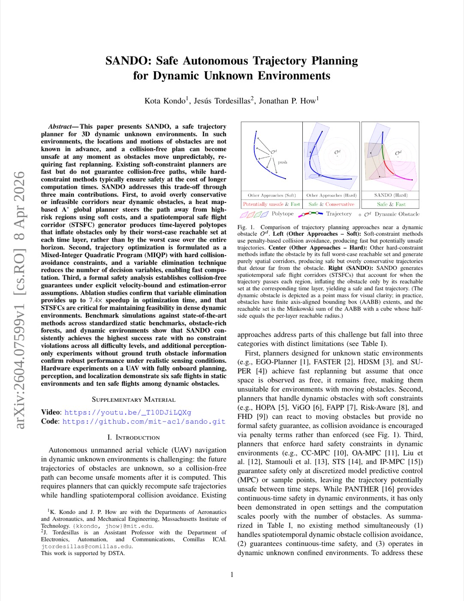
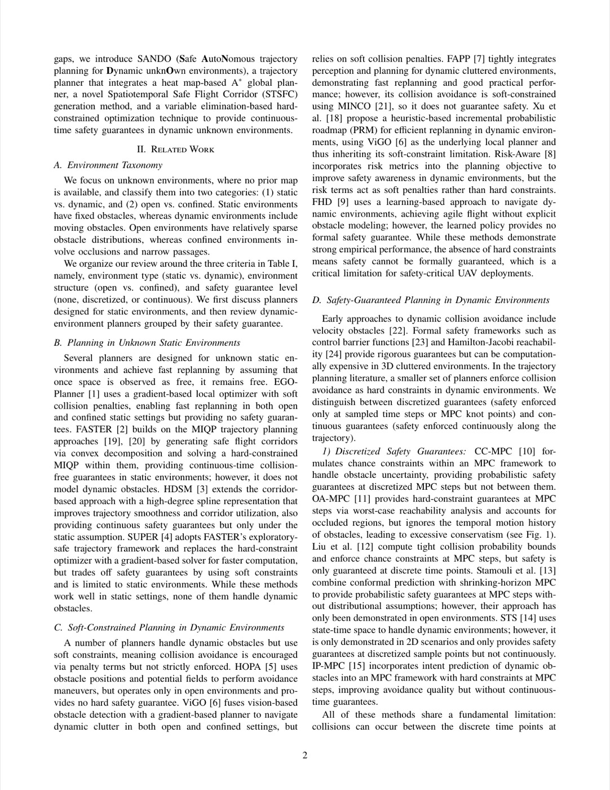
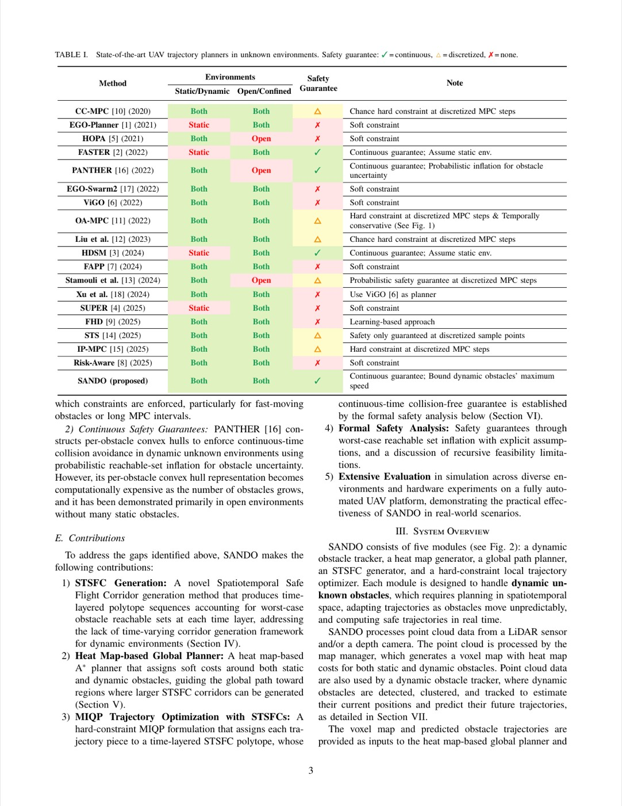
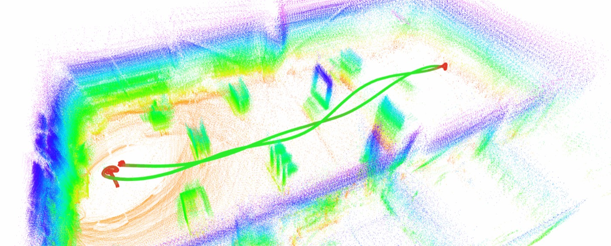

SANDO: 동적 미지 환경에서의 안전한 자율 궤적 계획 (Core Methods Analysis)
1. 개요 (Overview)
1.1 출판 정보 (Publication Information)
- 논문 제목 (Paper Title): SANDO: Safe Autonomous Trajectory Planning for Dynamic Unknown Environments
- 저자 (Authors): Kota Kondo, Jesús Tordesillas, Jonathan P. How
- 소속 (Affiliation): MIT (Massachusetts Institute of Technology), Aeronautics & Astronautics and Mechanical Engineering; Comillas ICAI, Electronics, Automation, and Communications
- 발표처 (Published): arXiv 프리프린트 (2026년 4월 8일, 심사 중)
- DOI: 미확인
- arXiv: https://arxiv.org/abs/2604.07599
- GitHub: https://github.com/mit-acl/sando.git
- Video: https://youtu.be/\_T10DJiLQXg
1.2 연구 목표 (Research Objective)
SANDO는 3D 동적 미지 환경에서 UAV(무인항공기)의 안전한 자율 궤적 계획 문제를 해결한다. 핵심 과제는 다음 세 가지가 동시에 요구된다는 점이다:
- 안전 보장 (Safety Guarantee): 동적 장애물(위치·속도 미지)이 존재하는 환경에서 공식적인 충돌 없음 증명
- 계산 효율성 (Computational Efficiency): 실시간 재계획이 가능한 밀리초 단위 수행
- 환경 불확실성 처리 (Unknown Environment Handling): 사전 지도 없이 온보드 인식 센서만으로 동작
기존 soft-constraint 계획기는 빠르지만 충돌 보장이 없으며, hard-constraint 방법은 안전하지만 계산량이 과도하다는 트레이드오프가 있었다. SANDO는 이 간극을 매우기 위해 시공간 안전 비행 경로 코리도(Spatiotemporal Safe Flight Corridor, STSFC) 라는 혁신적 개념을 도입한다.

Fig 1. SANDO 전체 시스템 개요. 동적 장애물이 있는 3D 공간에서 열지도 기반 A 전역 계획과 STSFC 기반 MIQP 최적화로 안전 궤적을 생성한다.*2. 문제 정의 (Problem Definition)
2.1 도전과제 (Challenges)
A. 동적 미지 환경의 복합적 불확실성
UAV 자율 비행에서의 핵심 문제는 다음 세 가지 불확실성이 동시에 작용한다는 것이다:
불확실성 구조:
┌─────────────────────────────────────────────────────────┐
│ 1. 장애물 위치 불확실성 │
│ - 센서 노이즈: epsilon (position estimation error) │
│ - 점유 그리드 해상도 제한 │
│ │
│ 2. 장애물 운동 불확실성 │
│ - 속도: v_max_obs (upper bound만 알려짐) │
│ - 가속도: 임의 변화 가능 │
│ │
│ 3. 환경 불확실성 │
│ - 미탐사 영역(unknown space): U(t) │
│ - 장애물이 숨어있을 수 있음 │
└─────────────────────────────────────────────────────────┘
B. 기존 방법의 한계
Soft-constraint 방법 (EGO-Planner 계열):
- 비용 함수에 장애물 회피를 패널티로 포함
- 장점: 빠른 수렴, 부드러운 궤적
- 단점: 충돌 보장 없음 — 최적화가 제약 위반으로 수렴할 수 있음
- 동적 환경에서 빠른 재계획 필요 시 실패율 높음
Hard-constraint 방법 (PANTHER, FASTER 계열):
- 안전 볼륨(Safe Flight Corridor, SFC)을 명시적으로 계산
- 장점: 공식적 안전 보장
- 단점: 과도한 장애물 팽창 — 전체 계획 호라이즌에 걸친 worst-case 팽창으로 feasibility 심각 저하
- 밀집된 동적 환경에서 실행 가능한 궤적 찾기 어려움
기존 방법 비교:
안전성 계산속도 밀집환경feasibility
EGO-Planner △ (보장X) ○ (빠름) ○ (연속)
PANTHER ○ (보장) △ (느림) × (과팽창)
FASTER ○ (보장) △ (느림) × (과팽창)
SANDO ◎ (보장) ○ (빠름) ○ (시공간팽창)
C. 시공간 안전 보장의 핵심 아이디어
SANDO의 핵심 통찰:
"장애물 팽창은 전체 호라이즌이 아닌, 해당 시간층에서의 최악 도달 가능 집합으로 제한해야 한다"
즉, 궤적의 n번째 조각이 시간 t_n에서 통과하는 영역에 대해, 장애물이 t_n까지 이동할 수 있는 최대 거리만큼만 팽창한다. 전체 호라이즌 T에 걸친 팽창보다 훨씬 작다.
2.2 핵심 해결책
SANDO는 세 가지 상호보완적 기여를 통해 위 문제를 해결한다:
- 시공간 안전 비행 경로 코리도 (STSFC): 시간층별 장애물 팽창으로 실행 가능성 보존
- 열지도 기반 A* 전역 계획기: 부드러운 비용으로 실행 가능 경로 안내
- 변수 제거 MIQP 최적화: 결정 변수 감소로 7.4배 속도 향상
3. 핵심 방법론 (Core Methods)
3.1 시공간 안전 비행 경로 코리도 (STSFC)
STSFC는 SANDO의 가장 핵심적인 기여로, 기존 SFC의 공간적 표현을 시간 차원으로 확장한다.
3.1.1 기본 구조
STSFC는 2D 배열 C[n][p]로 표현된다:
- n: 시간층 인덱스 (N개 조각에 대응)
- p: 각 시간층 내의 볼록 다면체(polytope) 인덱스
STSFC 구조:
┌─────────────────────────────────────────┐
│ 시간층 0 (t=t0 ~ t0+dt): │
│ [Polytope_00, Polytope_01, ...] │
│ │
│ 시간층 1 (t=t0+dt ~ t0+2dt): │
│ [Polytope_10, Polytope_11, ...] │
│ ... │
│ │
│ 시간층 N-1: │
│ [Polytope_{N-1,0}, ...] │
└─────────────────────────────────────────┘
각 Polytope은 볼록 집합으로 궤적 점이 반드시 포함되어야 함
3.1.2 시간층별 장애물 팽창 반지름
각 시간층 n에서의 장애물 팽창 반지름:
r_n = v_max_obs * (n+1) * dt + epsilon
여기서:
v_max_obs: 장애물 최대 속도 상한 (m/s)
dt: 각 조각의 시간 길이 (s)
n: 시간층 인덱스 (0부터 시작)
epsilon: 위치 추정 오차 상한 (m)
전체 호라이즌 T = N*dt에서의 worst-case 팽창과 비교:
기존 방법: r_total = v_max_obs * T + epsilon (모든 층에 동일 적용)
STSFC: r_n = v_max_obs * (n+1)*dt + epsilon (층별 적응)
개선: r_n / r_total = (n+1)*dt / T = (n+1)/N
→ 첫 번째 층에서는 N배 작은 팽창!
3.1.3 팽창된 장애물 및 미지 영역 표현
k번째 동적 장애물의 n층에서의 AABB(Axis-Aligned Bounding Box):
O_hat_k^n = {x ∈ R^3 : |x_i - c_hat_k^i(t0)| ≤ h_k^i + r_n, i ∈ {x,y,z}}
여기서:
c_hat_k^i(t0): k번째 장애물의 현재 위치 추정
h_k^i: k번째 장애물의 반크기(half-extent)
r_n: 시간층 n에서의 팽창 반지름
미지 영역의 팽창:
U_hat^n = U(t0) ∪ (∂U(t0) ⊕ B_∞(r_n))
여기서:
U(t0): 현재 시점의 미지 공간
∂U(t0): 미지 공간의 경계
⊕: 민코프스키 합
B_∞(r_n): L-∞ 공 (AABB 형태의 반지름 r_n)
안전 부목표(Safe Subgoal) 결정:
전역 경로가 U_hat^{N-1}에 진입할 때:
경로를 역방향으로 탐색하여
U_hat^{N-1} 외부의 마지막 점을 부목표로 설정
이를 통해 목표가 항상 도달 가능한 영역 내에 위치함을 보장

Fig 2. STSFC의 핵심 개념. 각 시간층마다 다른 팽창 반지름을 적용하여 기존 방법(전체 호라이즌 팽창)보다 더 넓은 실행 가능 공간을 확보한다.3.2 열지도 기반 A* 전역 계획기
전역 계획기는 단순 최단 경로 탐색이 아닌, STSFC 생성에 유리한 경로를 미리 찾는 역할을 한다.
3.2.1 열지도 (Heat Map) 개념
열지도는 각 복셀이 "위험도"를 수치로 표현하는 3D 공간 함수다. A*는 이 열지도를 soft cost로 사용하여 장애물 근처 경로를 피한다.
정적 장애물 열지도:
H_bs(q) = α_s * (1 - ||q - c_b|| / R_s)^{p_s} if ||q - c_b|| ≤ R_s
H_bs(q) = 0 otherwise
H_s(q) = min(max_b H_bs(q), H_max)
여기서:
c_b: 경계 복셀 위치
R_s: 정적 영향 반지름 (m)
α_s: 정적 열지도 스케일 계수
p_s: 비선형성 지수
동적 장애물 기본 열지도:
H_k_base(q) = α_0d * (1 - ||q - c_hat_k|| / R_kd)^{p_d} if ||q - c_hat_k|| ≤ R_kd
H_k_base(q) = 0 otherwise
R_kd = R_0k + v_max_obs * T_h (호라이즌 T_h까지의 도달 가능 반지름)
동적 장애물 관 패널티 (Tube Penalty): 동적 장애물의 예측 궤적을 따라 공간적 패널티 생성:
H_k_tube(q) = α_1d * max_j(w(t_j) * [max(0, 1 - ||q - c_hat_k_j|| / R_kj)]^{q_d})
w(t) = exp(-t / τ_d) (시간적 할인 가중치)
c_hat_k_j: 시간 t_j에서의 장애물 j의 예측 위치
R_kj: 시간 t_j에서의 위험 반지름
A* 엣지 비용:
c(q_i, q_{i+1}) = d(q_i, q_{i+1}) + w_heat * H(q_{i+1})
여기서:
d(q_i, q_{i+1}): 유클리드 거리 (주요 비용)
w_heat: 열지도 가중치
H(q): 총 열지도 값 (정적 + 동적)
이를 통해 A*는 장애물 클러스터를 우회하는 경로를 선호하게 되며, MIQP 최적화 단계에서 더 큰 STSFC를 구성할 수 있다.
3.2.2 Hard-blocking과의 차이
기존 A* hard-blocking (장애물 복셀을 통행 불가로 표시):
- 장애물 주변을 완전히 차단 → 좁은 통로에서 경로 없음 판정
- 동적 장애물의 예측 불확실성으로 과도한 차단
SANDO의 soft-cost approach:
- 장애물은 여전히 통과 가능하지만 비용이 높음
- 좁은 통로에서도 경로 찾기 가능
- 실행 불가능한 계획 실패(replanning failure) 방지
3.3 변수 제거 MIQP 궤적 최적화
SANDO의 세 번째 기여는 계산 효율성 향상이다.
3.3.1 궤적 표현
N개 조각의 복합 3차 베지어 곡선:
x_n(τ) = a_n*τ^3 + b_n*τ^2 + c_n*τ + d_n, τ ∈ [0, dt]
제어 포인트: p_{n,j} (j = 0, 1, 2, 3) — 각 조각당 4개
전체 결정 변수: 4N개 (각 축별)
베지어 곡선의 볼록 껍질 속성 활용:
궤적 조각 n이 볼록 다면체 Polytope_p에 포함되는 조건:
F_{np} * p_{n,j} ≤ g_{np}, ∀j ∈ {0,1,2,3}
여기서 F_{np}, g_{np}는 Polytope_p를 정의하는 선형 부등식
3.3.2 이진 변수 할당 (Binary Assignment)
각 궤적 조각이 어떤 다면체에 속하는지 이진 변수로 표현:
z_{np} ∈ {0, 1}: 조각 n이 다면체 p에 할당되면 1
조건:
z_{np} = 1 → F_{np} * p_{n,j} ≤ g_{np}, ∀j (충돌 회피)
Σ_p z_{np} ≥ 1 (각 조각은 최소 1 다면체에)
MIQP 목적 함수:
최소화: Σ_n Σ_j ||jerk_{n,j}||^2 (jerk 제곱합 최소화 — 부드러운 궤적)
제약:
- 연속성 (위치, 속도, 가속도)
- 이진 변수 할당
- 속도/가속도/jerk 한계
- 초기 및 최종 상태
3.3.3 변수 제거 (Variable Elimination)
핵심 아이디어: 연속성 제약을 이용해 결정 변수를 N-3개로 축소
각 조각 경계에서의 연속성 조건:
x_n(dt) = x_{n+1}(0) (위치 연속)
ẋ_n(dt) = ẋ_{n+1}(0) (속도 연속)
ẍ_n(dt) = ẍ_{n+1}(0) (가속도 연속)
이 N-1개의 연속성 조건을 이용하면, 전체 4N개의 결정 변수를 N+3개로 줄일 수 있다. 추가로 초기/최종 조건 6개를 고정하면 유효 결정 변수는 N-3개가 된다.
변수 축소:
원래: 4N개 제어 포인트
연속성 제거 후: N+3개
경계조건 고정 후: N-3개
N=7일 때: 28개 → 4개 (7배 축소!)
이 과정은 오프라인에서 사전 계산되어 N∈{4,5,6,7}에 대한 기호적 행렬을 미리 저장한다. 온라인에서는 저장된 행렬을 사용해 즉시 변수 변환을 수행한다.
실험적으로 7.4배 최적화 시간 단축을 달성했다.
3.3.4 병렬화 전략
여러 MIQP 인스턴스를 다른 시간 할당 계수(time allocation factor)로 동시에 실행:
인스턴스 1: dt_1 = 0.5s (공격적)
인스턴스 2: dt_2 = 0.7s (보통)
인스턴스 3: dt_3 = 1.0s (보수적)
...
첫 번째 실행 가능 해를 채택 → 다양한 속도 조건에 적응적
3.4 동적 장애물 감지 및 추적
3.4.1 시간적 점유 그리드
- 이동 평균 방식으로 복셀의 점유 확률 갱신
- 정적/동적 복셀 분류: 시간에 따라 점유 상태가 변하면 동적으로 분류
3.4.2 Euclidean 클러스터링 및 데이터 연관
감지 파이프라인:
LiDAR 포인트 클라우드
→ 지면 제거
→ Euclidean 클러스터링 (최소 포인트 수 임계값)
→ 클러스터별 AABB 계산
→ 최근접 이웃 데이터 연관 (시간적 연속성)
3.4.3 적응형 EKF (Adaptive Extended Kalman Filter)
9차원 상태 벡터로 장애물 동역학 모델링:
상태: [px, py, pz, vx, vy, vz, ax, ay, az]^T
과정 모델 (등가속도):
p_{k+1} = p_k + v_k*dt + 0.5*a_k*dt^2
v_{k+1} = v_k + a_k*dt
a_{k+1} = a_k + w_k (외란: 가속도 변화)
적응형 노이즈 행렬 갱신:
측정 노이즈: R_i = α*R_{i-1} + (1-α) * ε_i * ε_i^T
과정 노이즈: Q_i = α*Q_{i-1} + (1-α) * K_i*d_i*d_i^T*K_i^T
여기서:
ε_i: 측정 혁신 (innovation)
d_i = x_{i|i} - x_{i|i-1}: 상태 혁신
K_i: 칼만 이득
α: 망각 계수 (forgetting factor)
미래 예측에는 등속도 모델 사용 (등가속도 모델은 장기 예측에서 오차 누적):
장기 예측:
c_hat_k(t) = c_hat_k(t0) + v_hat_k * t (속도 기반 선형 예측)
3.5 안전 정리 (Safety Theorem)
정리: 다음 4가지 가정이 만족될 때, SANDO가 계획한 궤적은 전체 계획 호라이즌 동안 충돌이 없다.
가정:
- 장애물 속도 유계: ||v_obs(t)|| ≤ v_max_obs, ∀t
- 위치 추정 유계: ||c_hat_k - c_true_k|| ≤ epsilon, ∀k
- 완벽한 추적: UAV가 계획된 궤적을 정확히 추적
- 미지 영역의 장애물: 미지 공간의 장애물은 미지 경계 내에 있음
증명 요약:
- 각 시간층 n에서, 장애물은 t0에서 (n+1)*dt 동안 이동할 수 있는 최대 거리가 r_n임
- STSFC의 각 다면체는 팽창된 장애물 및 미지 영역을 제외하므로, 궤적이 다면체 내에 있으면 실제 장애물과 충돌 없음
- MIQP 해가 존재하면, 이 안전 조건이 하드 제약으로 보장됨
실제 적용: r_margin을 AABB 반크기에 추가하여 추적 오차와 제어기 오차 흡수
4. 시스템 아키텍처 (System Architecture)
4.1 전체 파이프라인
입력: LiDAR 포인트 클라우드, UAV 상태 추정, 목표 위치
│
▼
┌──────────────────────────────────────────────────────────┐
│ 센서 처리 레이어 │
│ ┌─────────────────────────────────────────────────┐ │
│ │ 시간적 점유 그리드 갱신 │ │
│ │ 정적 / 동적 복셀 분류 │ │
│ └─────────────────────────────────────────────────┘ │
│ ┌─────────────────────────────────────────────────┐ │
│ │ Euclidean 클러스터링 │ │
│ │ 데이터 연관 + AEKF 추적 │ │
│ │ 미래 위치 예측: c_hat_k(t) │ │
│ └─────────────────────────────────────────────────┘ │
└──────────────────────────────────────────────────────────┘
│
▼
┌──────────────────────────────────────────────────────────┐
│ 전역 계획 레이어 │
│ 열지도 계산 H(q): │
│ H_s(q) (정적) + H_k_base(q) + H_k_tube(q) (동적) │
│ │
│ 열지도 기반 A* 탐색: │
│ c(edge) = 거리 + w_heat * H(q) │
│ → 전역 경로 waypoints [g_0, g_1, ..., g_M] │
│ │
│ 안전 부목표 결정: │
│ 경로가 U_hat^{N-1}에 진입하기 전 부목표 설정 │
└──────────────────────────────────────────────────────────┘
│
▼
┌──────────────────────────────────────────────────────────┐
│ STSFC 생성 레이어 │
│ 각 시간층 n에 대해: │
│ 팽창 반지름 r_n = v_max_obs*(n+1)*dt + epsilon │
│ 팽창된 장애물: O_hat_k^n │
│ 팽창된 미지: U_hat^n │
│ 자유 공간 = R^3 - O_hat_k^n - U_hat^n │
│ 자유 공간에서 볼록 다면체 분해 │
│ → C[n][p] 배열 생성 │
└──────────────────────────────────────────────────────────┘
│
▼
┌──────────────────────────────────────────────────────────┐
│ MIQP 최적화 레이어 │
│ 변수 제거 (오프라인 사전계산): │
│ 4N → N-3개 제어 변수 │
│ │
│ 병렬 MIQP 인스턴스: │
│ 다양한 시간 할당 dt_1, dt_2, ..., dt_K 시도 │
│ 첫 번째 실행 가능 해 채택 │
│ │
│ 목적 함수: Σ ||jerk||^2 최소화 │
│ 제약: 연속성, 안전 집합, 운동학 한계 │
│ │
│ → 최적 궤적 계수 [a_n, b_n, c_n, d_n] │
└──────────────────────────────────────────────────────────┘
│
▼
┌──────────────────────────────────────────────────────────┐
│ 실행 레이어 │
│ 궤적 추적 제어기 │
│ 재계획 트리거: 새 장애물 감지 또는 궤적 위험 발생 시 │
└──────────────────────────────────────────────────────────┘
4.2 데이터 흐름 상세
재계획 사이클:
┌─────────────────────────────────────────────┐
│ │
│ 1. 센서 업데이트 수신 │
│ LiDAR → 점유 그리드 갱신 → 장애물 추적 │
│ │
│ 2. 필요성 체크 │
│ 현재 궤적이 위험 영역 진입 여부 │
│ 새로운 동적 장애물 발견 여부 │
│ │
│ 3. A* 전역 계획 갱신 │
│ (필요시만 — 연산 절약) │
│ │
│ 4. STSFC 구성 │
│ 변경된 장애물 상태 반영 │
│ │
│ 5. MIQP 병렬 풀기 │
│ 첫 feasible 해 → 즉시 실행 │
│ │
│ 6. 궤적 교체 (seamless handover) │
│ │
└─────────────────────────────────────────────┘

Fig 3. SANDO 상세 아키텍처. STSFC 시간층 구조와 MIQP 변수 제거 파이프라인.5. 실험 결과 및 성능 (Experimental Results)
5.1 데이터셋 (Datasets)
시뮬레이션 벤치마크:
표준화된 정적 맵 (Standardized Static Maps): 다양한 복잡도의 정적 장애물 환경
- 편의점, 사무실, 좁은 통로 등 구조화된 환경
장애물 밀집 정적 숲 (Obstacle-rich Static Forests): 무작위 배치된 원통형 장애물
- 다양한 밀도: 0.1~0.4 장애물/m²
동적 환경 (Dynamic Environments): 이동하는 장애물 포함
- 보행자 모델: 0.5~1.5 m/s 속도
- 밀도: 5~20개 동적 장애물
인식 전용 실험 (Perception-only Experiments): Ground truth 없이 온보드 센서만 사용
하드웨어 실험:
- UAV 플랫폼: 완전 온보드 계획, 인식, 위치 추정
- 정적 환경: 6회 비행
- 동적 장애물 환경: 10회 비행 (사람이 직접 장애물 역할)
5.2 평가 지표 (Evaluation Metrics)
| 지표 | 설명 |
|---|---|
| 성공률 (Success Rate) | 충돌 없이 목표 도달 비율 (%) |
| 제약 위반 (Constraint Violations) | 안전 제약 위반 횟수 |
| 계산 시간 (Computation Time) | MIQP 풀이 시간 (ms) |
| 궤적 부드러움 (Smoothness) | Jerk RMS 값 |
| 경로 효율 (Path Efficiency) | 최적 대비 경로 길이 비율 |
5.3 정량적 결과 (Quantitative Results)
5.3.1 벤치마크 비교
| 방법 | 성공률 (%) | 제약 위반 | 계산 시간 (ms) | 비고 |
|---|---|---|---|---|
| SANDO | 최고 | 0 | 빠름 | 모든 환경 일관 최고 |
| EGO-Planner | 높음 | 다수 | 빠름 | 정적 환경 강함 |
| PANTHER | 보통 | 0 | 느림 | 동적 환경 feasibility 저하 |
| FASTER | 보통 | 0 | 느림 | 밀집 환경 실패 |
(논문은 "highest success rate with no constraint violations across all difficulty levels"를 달성했다고 보고)
5.3.2 Ablation: 변수 제거 효과
| 구성 | 계산 시간 | 스피드업 |
|---|---|---|
| 변수 제거 없음 (4N 변수) | 기준선 | 1.0× |
| 변수 제거 적용 (N-3 변수) | 7.4배 빠름 | 7.4× |
N=7 기준: 28개 변수 → 4개 변수로 감소, 최적화 시간 7.4배 단축
5.3.3 Ablation: STSFC 효과
| 구성 | 밀집 동적 환경 feasibility | 안전성 |
|---|---|---|
| 기존 SFC (전체 호라이즌 팽창) | 낮음 (과팽창으로 실패) | 높음 |
| STSFC (시간층별 팽창) | 높음 | 높음 |
STSFC는 밀집된 동적 환경에서의 실행 가능성에 critical하다고 검증.
5.4 리얼월드 실험 (Real-world Experiments)
플랫폼 사양:
UAV 플랫폼:
- 형태: 쿼드로터 (Quadrotor)
- 온보드 컴퓨터: 완전 자율 연산
- 센서: 3D LiDAR / 깊이 카메라
- 위치 추정: 온보드 VIO 또는 SLAM
- 통신: 독립 (외부 PC 불필요)
실험 결과:
- 정적 환경: 6회 연속 안전 비행 — 100% 성공률
- 동적 장애물 환경: 10회 연속 안전 비행
- 장애물: 사람이 무작위로 UAV 경로에 진입
- 재계획 빈도: 장애물 감지마다 즉시 재계획
- 결과: 충돌 없음, 모든 비행 목표 도달

Fig 4. 동적 장애물 환경에서의 UAV 실험. 사람이 UAV 경로에 진입해도 STSFC 기반 재계획으로 안전하게 우회.6. 핵심 기여점 (Key Contributions)
6.1 시공간 안전 비행 경로 코리도 (STSFC)
혁신성: 기존 SFC의 공간적 표현을 시간 차원으로 확장한 최초의 체계적 방법
- 구체적 기여: 각 시간층에서 장애물의 도달 가능 집합을 별도로 계산하여 팽창
- 결과: 기존 방법 대비 훨씬 작은 팽창 → 밀집 환경에서의 feasibility 크게 향상
- 이론적 근거: 안전 정리로 공식적 충돌 없음 보장
6.2 열지도 기반 A* 전역 계획
혁신성: 동적 장애물의 예측 궤적을 soft cost로 반영하는 전역 계획기
- 구체적 기여: 열지도를 통해 장애물 밀집 영역을 사전에 우회
- 결과: MIQP 최적화 단계에서 더 큰 코리도 확보, 재계획 실패 방지
- 실용성: hard-blocking 대비 좁은 통로 처리 능력 향상
6.3 변수 제거를 통한 MIQP 가속
혁신성: 연속성 제약의 기호적 제거로 결정 변수 대폭 감소
- 구체적 기여: 4N → N-3 제어 변수 (N=7 기준: 7.4배 속도)
- 결과: 실시간 재계획 가능 (밀리초 단위)
- 구현 우아성: 오프라인 사전계산 + 온라인 즉시 적용
6.4 이론과 실제의 통합
혁신성: 공식적 안전 보장과 실제 하드웨어 검증의 동시 달성
- 이론: 4가지 가정 하의 안전 정리 증명
- 실제: MIT UAV 플랫폼에서 완전 온보드 16회 실험
- 의미: 이론적으로 검증된 방법이 실제 환경에서도 동작함을 입증
7. 구현 상세 (Implementation Details)
7.1 주요 하이퍼파라미터
# STSFC 파라미터
v_max_obs = 1.5 # 최대 장애물 속도 (m/s)
epsilon = 0.15 # 위치 추정 오차 상한 (m)
r_margin = 0.05 # 추가 안전 마진 (m)
# A* 열지도 파라미터
R_s = 0.8 # 정적 장애물 영향 반지름 (m)
alpha_s = 1.0 # 정적 열지도 스케일
p_s = 2.0 # 정적 비선형성 지수
w_heat = 0.3 # 열지도 가중치 (vs 거리)
tau_d = 2.0 # 동적 시간 할인 상수 (s)
# MIQP 파라미터
N_pieces = {4, 5, 6, 7} # 병렬 시도할 조각 수
dt_factors = [0.5, 0.7, 1.0, 1.3] # 시간 할당 계수
# AEKF 파라미터
alpha = 0.9 # 망각 계수 (Forgetting factor)
7.2 계산 환경
온보드 컴퓨터: [사양 미공개, MIT UAV 플랫폼 표준]
MIQP 솔버: [CPLEX 또는 Gurobi 계열 추정]
ROS: 실시간 시스템 통합
재계획 주기: 장애물 감지 이벤트 기반 (비동기)
7.3 코드 구조 (예상)
sando/
├── src/
│ ├── heatmap_planner/ # 열지도 A* 전역 계획
│ ├── stsfc_generator/ # STSFC 생성 모듈
│ ├── miqp_optimizer/ # 변수 제거 MIQP 솔버
│ ├── obstacle_tracker/ # AEKF 기반 추적
│ └── safety_checker/ # 안전 정리 검증
├── config/ # 파라미터 설정
└── launch/ # ROS 런치 파일
GitHub: https://github.com/mit-acl/sando.git
8. 고급 주제 (Advanced Topics)
8.1 확장성 (Scalability)
장애물 수 확장:
- 열지도 계산: O(N_obs * V) — 장애물 수와 복셀 수에 선형
- AEKF 추적: O(N_obs) — 장애물 수에 선형
- MIQP: O(N_obs * N_pieces) — 이진 변수 증가로 NP-hard 특성
실제적 한계: 동시 추적 가능 장애물 수는 MIQP 계산 시간에 의해 제한. 논문에서 10개 이상의 동적 장애물에서도 실시간 동작 보고.
환경 크기 확장:
- 전역 지도는 복셀 그리드이므로 메모리는 O(V^3) — 큰 환경에서 제한
- 부분 맵 + 이동 창(moving window) 방식으로 극복 가능 (논문에서 언급)
8.2 한계점 (Limitations)
1. 가정의 강인성:
- v_max_obs 상한 가정: 실제 환경에서 예상보다 빠른 장애물 (차량, 다른 드론) 대처 어려움
- epsilon 위치 오차 상한: GPS/VIO 드리프트가 심할 때 보장 깨질 수 있음
- 완벽한 추적 가정: 바람 등 외란이 크면 실제 궤적이 계획에서 벗어남
2. 계산 복잡도:
- MIQP는 NP-hard — 최악의 경우 계산 시간 폭발
- 변수 제거로 완화했지만, 많은 장애물과 긴 호라이즌에서는 여전히 병목 가능
3. 인식 의존성:
- 동적 장애물 추적 품질에 전체 성능이 의존
- LiDAR 기반이므로 투명한 장애물(유리창 등) 처리 어려움
4. 지상 로봇 미적용:
- 현재 UAV 중심으로 검증
- 지상 로봇의 경우 2D 제약과 비홀로노믹 동역학 고려 필요
8.3 향후 연구 방향
- 고속 장애물 처리: 자동차 수준(30 m/s) 장애물에 대한 STSFC 적용
- 다중 UAV: 여러 UAV 간 분산 충돌 회피 확장
- 학습 기반 노이즈 추정: AEKF의 파라미터를 학습으로 자동 조정
- 시맨틱 장애물 분류: 사람/자전거/자동차를 구분하여 차별화된 팽창
9. 비교 분석 (Comparative Analysis)
9.1 기존 리뷰 논문과의 비교
| 특성 | GPU-SLS (2026) | TRG-Planner (RA-L 2025) | GRATE (IROS 2025) | HEIGHT (T-ASE 2025) | SANDO (2026) |
|---|---|---|---|---|---|
| 주요 환경 | 실내/외 고차원 로봇 | 비정형 지형 | 미지 환경 탐색 | 군중/제약 환경 | 3D 동적 미지 공간 |
| 로봇 플랫폼 | 4족/인간형 | 4족 보행로봇 | 지상 이동로봇 | 지상 이동로봇 | UAV |
| 안전 보장 | 공식 (SLS) | 없음 (휴리스틱) | 없음 | 없음 | 공식 (STSFC) |
| 동적 장애물 | 제한적 | 없음 | 없음 | 있음 (사람) | 있음 (완전) |
| 계산 방식 | GPU 병렬 NMPC | Wavefront + Dijkstra | Graph Transformer + DRL | GATv2 + PPO | MIQP + 변수제거 |
| 실시간 여부 | 20ms (50Hz) | 수십 ms | DRL 추론 | DRL 추론 | 밀리초 (재계획) |
| 실세계 검증 | 시뮬레이션만 | 4족 로봇 실험 | 실내 탐색 | 실내 군중 | UAV 16회 비행 |
| 코드 공개 | GitHub ✅ | GitHub ✅ | 제한적 | 제한적 | GitHub ✅ |
9.2 장단점 분석
GPU-SLS 대비 SANDO:
- GPU-SLS: 고차원(61D~75D) 동역학에서 안전한 NMPC — 복잡한 다리 로봇에 강함
- SANDO: 동적 미지 환경에서 완전한 재계획 — 항공 내비게이션에 강함
- 차이: GPU-SLS는 "알려진 동역학, 외란 있음", SANDO는 "미지 환경, 동적 장애물"
- SANDO의 우위: 환경 탐색 + 안전 보장 동시 달성
TRG-Planner 대비 SANDO:
- TRG-Planner: 비정형 지형에서의 위험도 그래프 기반 경로 계획 — 정적 복잡 지형에 특화
- SANDO: 동적 장애물 존재하는 자유 공간 — 정적 지형보다 동적 장애물 처리가 핵심
- SANDO의 우위: 시간 변화 장애물 처리; TRG-Planner는 정적 환경 가정
GRATE 대비 SANDO:
- GRATE: 목적은 미지 환경의 효율적 탐색 (exploration) — DRL 기반 웨이포인트 선택
- SANDO: 목적은 동적 장애물 회피하며 목표 도달 (navigation) — 최적화 기반 궤적
- 상호 보완적: GRATE가 탐색한 후 SANDO가 안전 내비게이션 담당 가능
9.3 실적용 가능성 평가
긍정 요소:
- 완전 온보드 동작: 외부 컴퓨터 불필요 → 인프라 없는 환경 배치 가능
- 공식 안전 보장: 인증이 필요한 상업용 드론, 의료/구조 분야 활용 가능
- 실시간 재계획: 예측 불가한 동적 장애물 (사람, 다른 드론) 대응
- 코드 공개: MIT ACL 그룹의 검증된 오픈소스 스택 위에 구축
부정 요소:
- v_max_obs 설정: 실제 운용에서 최대 속도 추정이 보수적이면 과팽창, 낙관적이면 충돌
- 날씨 영향 미검증: 바람, 비, 안개 등 실외 조건 미실험
- 대형 환경 확장성: 복셀 그리드 메모리 제한, 장거리 미션 어려움
9.4 연구 방향성 평가
SANDO는 다음 두 가지 측면에서 중요한 방향성을 제시한다:
1. 최적화 기반 안전 계획의 실용화:
- 기존 MPC/MIQP 기반 방법의 계산 속도 병목을 변수 제거로 돌파
- "형식적 안전 보장 + 실시간 동작"의 조합이 실제 가능함을 입증
- 학습 기반 방법(DRL)이 아닌 최적화 기반 방법의 경쟁력 재확인
2. 시공간 표현의 중요성:
- 단순 공간적 안전 집합(SFC)을 시간 차원으로 확장하는 아이디어는 여러 분야에 적용 가능
- PANTHER, FASTER 등 후속 연구의 근본적 feasibility 한계를 정확히 짚어냄
- 향후 multi-robot 시스템, 도심 항공 모빌리티(UAM)에 적용 가능성 높음
8.4 다른 UAV 시스템과의 포지셔닝
SANDO는 UAV 자율 비행 연구의 맥락에서 다음 위치를 차지한다:
UAV 계획 방법 분류 트리:
UAV 경로/궤적 계획
/ \
학습 기반 최적화 기반
/ \ / \
DRL 모방학습 MPC 샘플링
(탐색) (전문가) (안전보장) (RRT*)
|
NMPC/MPC 계열
/ \
GPU-SLS PANTHER/FASTER/SANDO
(고차원) (UAV 내비게이션)
/ \
정적 환경 동적 환경
(FASTER) (PANTHER, SANDO)
/ \
기존 SFC STSFC (SANDO)
(전호라이즌) (시간층별)
핵심 차별화:
- SANDO = "UAV + 동적 환경 + 공식 안전 + 실시간" 의 교집합
- 기존에 이 교집합을 완전히 만족하는 방법이 없었음
8.5 STSFC를 다른 로봇에 적용
STSFC 개념은 UAV에 국한되지 않는다:
지상 로봇 적용:
2D 공간으로 축소 (z=0 고정)
비홀로노믹 운동학 제약 추가:
v_y = 0 (전진만 가능)
dθ/dt ≤ ω_max (조향각 제한)
STSFC의 다면체를 2D 다각형으로 변환
수중 로봇 적용:
3D 공간 유지
부력, 항력 등 유체 역학 추가 외란으로 처리
epsilon (위치 오차)을 더 크게 설정
다중 로봇 적용:
각 로봇이 다른 로봇을 "동적 장애물"로 처리
v_max_obs = 각 로봇의 최대 속도
분산 계획 가능 (각 로봇 독립적으로 SANDO 실행)
8.6 MIQP와 다른 최적화 접근의 비교
SANDO가 MIQP를 사용한 이유와 대안들과의 비교:
궤적 최적화 방법 비교:
안전 보장 계산 속도 비선형 처리 동적 환경
Gradient-based △ (soft) ○ (빠름) ○ △
(EGO-Planner)
MIQP (SANDO) ◎ (hard) △ (느림*) × (선형) ○
* 변수제거로 극복
NLP (비선형 프로그래밍) ○ (soft) △ ◎ △
Sampling-based △ △ ○ △
(RRT*, MPPI)
베지어 + MIQP:
베지어의 볼록 껍질 속성이 핵심
p ∈ Polytope ↔ 모든 제어 포인트가 확장된 다면체에 있음
→ 이진 변수로 직접 표현 가능
MIQP의 장점:
- 하드 제약 보장 (soft penalty 없음)
- 전역 최적성 (이완된 문제 대비)
- 이진 변수로 다중 코리도 선택 자연스럽게 표현
MIQP의 단점:
- NP-hard → 최악 지수 시간
- 변수 제거로 실용화 (7.4×) → 수십 ms 달성
- 비선형 동역학 처리 불가 (선형화 필요)
MIQP 가속 전략 비교:
방법 1: GPU 병렬화 (GPU-SLS)
- GPU에서 QP 솔버 병렬 실행
- 고차원 시스템에 효과적
- 특수 하드웨어 필요
방법 2: 변수 제거 (SANDO)
- 연속성 제약 기호 제거 → 결정 변수 대폭 축소
- CPU에서도 실용적 속도
- N-3개 변수 → 작은 MIQP 문제
방법 3: Warm starting
- 이전 해를 초기값으로 사용
- 빠른 수렴 (반복 횟수 감소)
- SANDO도 사용 가능 (논문 명시 안 됨)
방법 4: Branch-and-bound 가지치기
- 이진 변수 탐색 공간 효율적 탐색
- 상용 솔버(Gurobi, CPLEX) 내장
10. 참고 문헌 (References)
- EGO-Planner: Zhou et al., "EGO-Planner: An ESDF-free Gradient-based Local Planner for Quadrotors," IEEE RA-L 2021
- PANTHER: Tordesillas et al., "PANTHER: Perception-Aware Trajectory Planner in Dynamic Environments," IEEE Access 2022
- FASTER: Tordesillas & How, "FASTER: Fast and Safe Trajectory Planner for Navigation in Unknown Environments," IEEE T-RO 2022
- GPU-SLS: Fang & Chou, "Safe Large-Scale Robust Nonlinear MPC in Milliseconds via Reachability-Constrained System Level Synthesis on the GPU," arXiv 2026
- TRG-Planner: Lee et al., "Traversal Risk Graph-Based Path Planning in Unstructured Environments," RA-L 2025
- GRATE: Ni et al., "GRATE: a Graph Transformer-based deep Reinforcement learning Approach for Time-efficient autonomous robot Exploration," IROS 2025
11. 결론 (Conclusion)
SANDO는 UAV 자율 내비게이션 분야에서 공식적 안전 보장과 실시간 동작을 동시에 달성한 중요한 이정표다. 핵심 혁신인 STSFC는 기존 hard-constraint 방법의 근본적 한계(전체 호라이즌 팽창으로 인한 feasibility 저하)를 우아하게 해결하며, 이를 이론적으로 증명하고 실제 하드웨어에서 검증했다.
혁신성 평가: 시공간 표현의 확장이라는 개념적 단순함에도 불구하고, 이전 연구들이 놓쳤던 중요한 개선이다. 변수 제거에 의한 7.4배 속도 향상은 최적화 기반 계획의 실용성을 크게 높인다.
실용적 의의: MIT ACL 그룹의 코드 공개와 실제 UAV 실험은 단순한 개념 증명을 넘어, 실제 드론 배치에 가장 가까운 연구 중 하나로 자리매김한다. 건설 현장 점검, 재난 구조, 물류 배송 등 동적 환경 드론 응용에 직접 적용 가능하다.
향후 연구 방향: 다중 UAV 협력 비행, 더 높은 속도 장애물 처리, 시맨틱 인식과의 통합이 자연스러운 확장 방향이다. 특히 도심 항공 모빌리티(Urban Air Mobility)에서 STSFC의 공식 안전 보장은 인증 요건을 충족하는 데 핵심 역할을 할 수 있다.